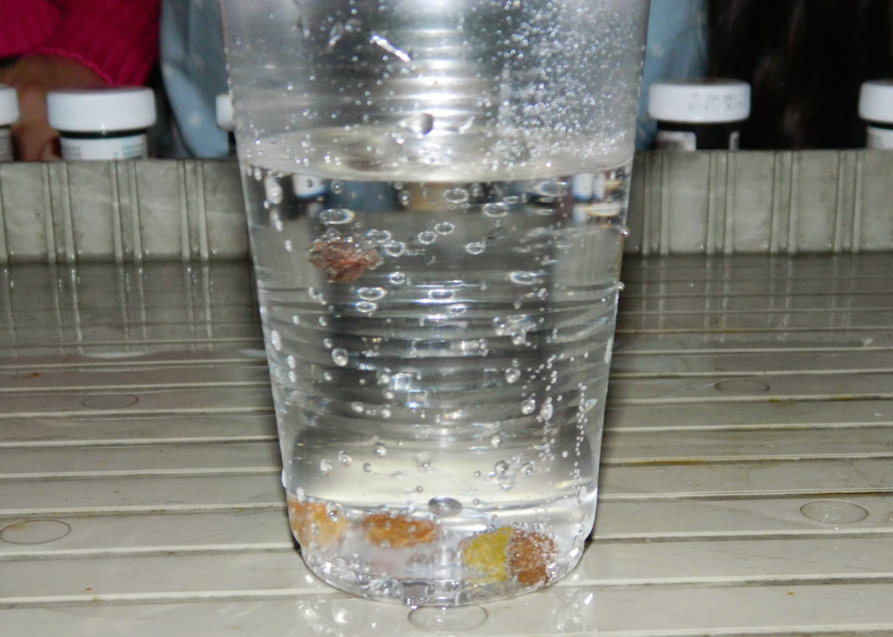
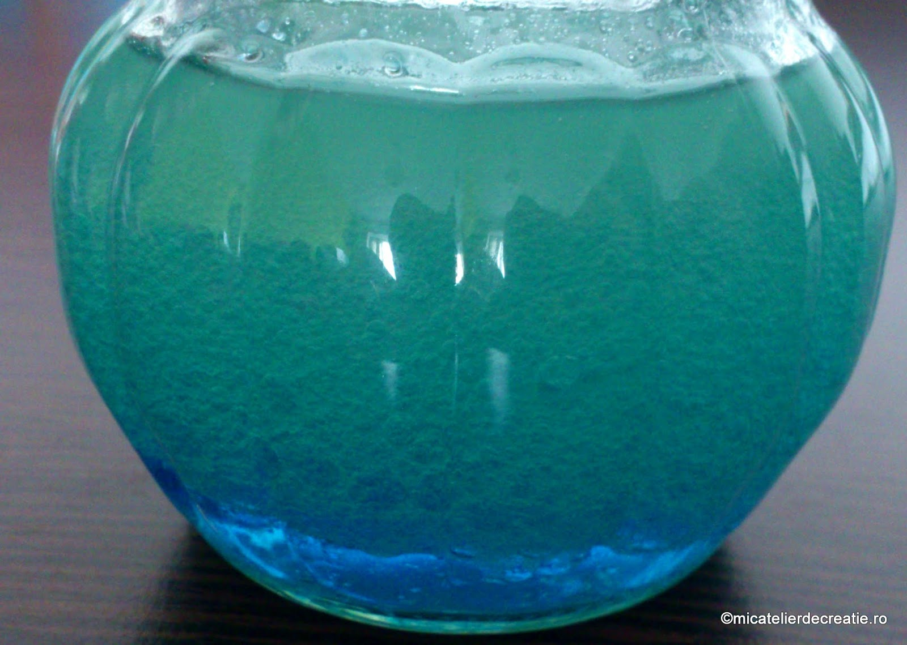
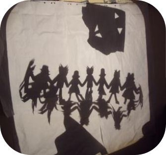
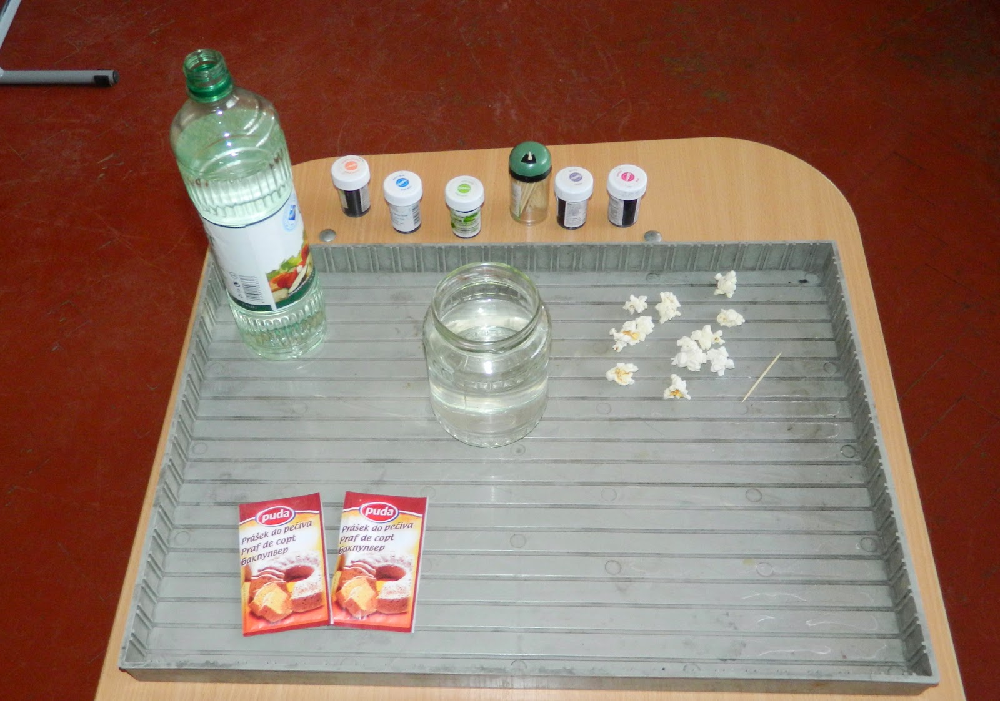
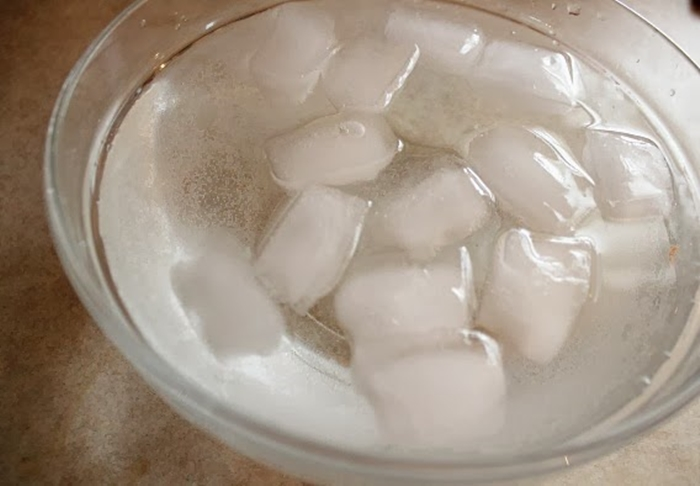
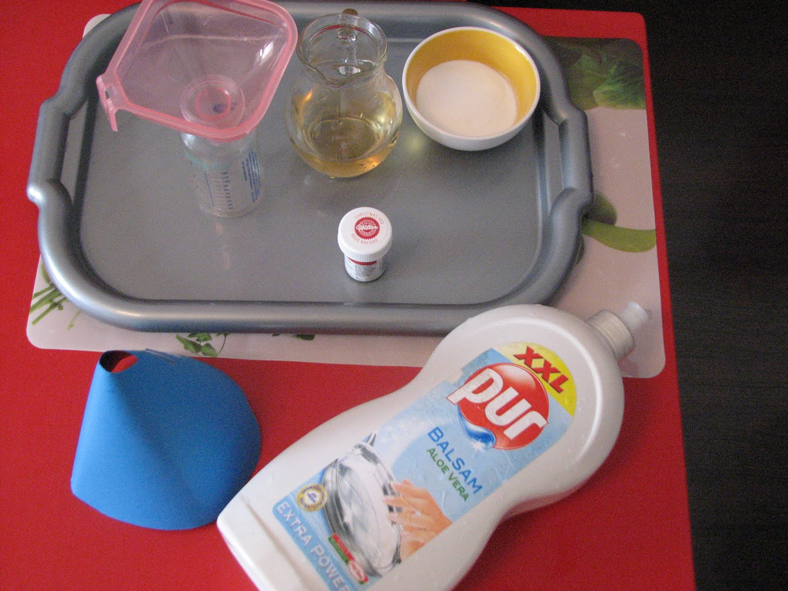
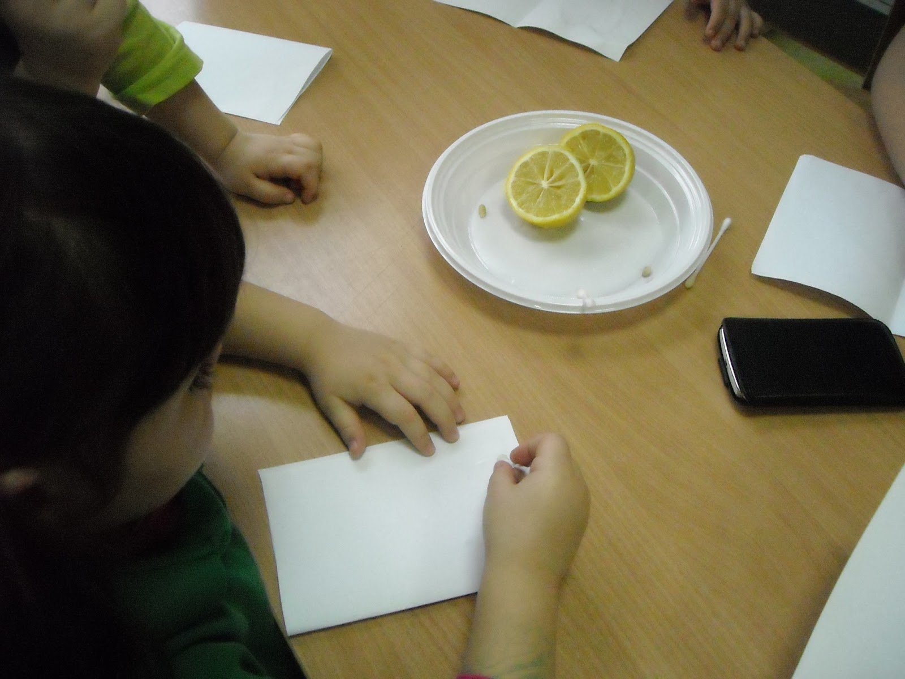
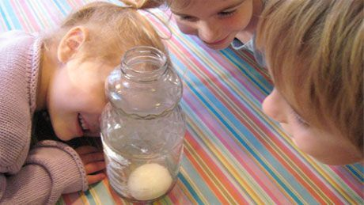

Stafidele dansatoare

Toarnă o băutură răcoritoare carbogazoasă puternic acidulată într-un pahar transparent și presară 4 - 5 stafide proaspete pe suprafața acestuia. Arată-i copilului tău cum bulele formate de dioxidul de carbon reușesc să facă stafidele să sară de jos în sus, de parcă ar dansa.
Stafidele au o masă mai densă decat lichidul băuturii, de aceea se vor scufunda inițial. Atunci când bulele dioxidului de carbon se lipesc de suprafața stafidelor, fructele sunt propulsate la suprafață, unde balonașele acidulate se sparg, iar stafidele plonjează din nou pe fundul paharului. Procesul continua pana la eliminarea intregii cantitati de acid din suc.
Mini oceanul

Umple o sticla de plastic de 1 litru cu apa, aproximativ trei sferturi. Adauga colorant alimentar albastru si putin ulei pentru gatit, apoi insurubeaza bine capacul sticlei si arata-i curiosului tau cum uleiul nu se dizolva niciodata in apa, dispersandu-se in mici bule cu aspect diferit fata de cel al lichidului albastru.
Piperul fugar
.jpg)
Presara piper pe suprafata unei cani de apa. Pune un strop de sapun lichid pe buricul degetului aratator si atinge centrul "lacului" de piper, pentru a forma o zona limpede. Explica-i micutului tau ca sapunul "sparge" tensiunea formata la suprafata apei, iar presiunea din jur impinge piperul departe de sapun.
Picturile solare

Pune obiecte de forme diferite pe o foaie de hartie glase de culoare inchisa, apoi aseaza-le intr-un spatiu in care pot sta expuse un timp la razele soarelui. Dupa cateva ore, arata-i copilului tau cum actiunea razelor s-a concretizat in decolorarea hartiei, lasand portiuni mai inchise acolo unde obiectele au fost asezate.
Dansul popcornului

Umple un borcan de sticla trei sferturi cu apa si adauga 2 linguri de praf de copt. Completeaza magica potiune cu o picatura de colorant alimentar si 10-15 floricele de porumb. Ultimul pas este sa adaugi cativa stropi de otet alimentar, actiune care va determina popcornul sa se miste singur in aproximativ 2 minute.
Magia de gheata

Umple un pahar de apa si adauga un cub de gheata. Propune-i micutului tau sa lege cu sfoara cubul si sa incerce astfel sa il scoata din recipient. Dupa cateva incercari esuate, spune-i sa isi puna mainile la ochi si sa numere pana la 10, timp in care tu adaugi putina sare peste gheata si il rogi sa incerce din nou. De aceasta data, cubul va putea fi scos cu usurinta, gratie faptului ca sarea a topit cubul suficient de mult incat sa se "lipeasca" de sfoara. Explica-i la final fenomenul.
Vulcanul

Pune un borcanel gol de mancare pentru bebelusi pe o tava si acopera-l cu plastilina, modeland-o astfel incat sa semene cat mai fidel cu un munte. Adauga intr-un pahar cateva picaturi de colorant alimentar rosu si o lingurita de praf de copt. Trezeste "vulcanul" la viata cu ajutorul unei cantitati mici de otet, care va produce o spuma similara cu lava vulcanica.
Cerneala invizibila

Cu ajutorul unui betisor de urechi sau o pensula pentru desen, incurajeaza-ti copilul sa scrie mesaje sau sa realizeze picturi pe o coala alba de desen, folosind suc de lamaie. Lasa urmele sa se usuce, apoi aseaza un bec aprins cat mai aproape de "opera de arta", pana cand scrisul devine vizibil, pe masura ce sucul de lamaie uscat se face tot mai maron la nuanta.
Ouale plutitoare

Toarna apa intr-un pahar inalt pana cand se umple pe jumatate. Adauga aproximativ 6 linguri de sare, apoi completeaza continutul adaugand apa plata cu grija, astfel incat sa nu agiti compozitia. Ia un ou crud si lasa-l sa pluteasca pe suprafata lichidului.
Apa sarata este mai densa decat apa plata, asadar va face orice obiect sa pluteasca. Atunci cand oul ajunge pe suprafata paharului, el se va scufunda in apa limpede, insa se va opri undeva la jumatatea paharului, unde se "loveste" de stratul mult mai sarat de lichid. Experimentul stiintific are rezultatul scontat doar daca reusesti sa nu amesteci cele doua tipuri de apa, mai exact sa nu dizolvi sarea in totalitate. Iata un mod inedit prin care poti sa ii explici micutului tau de ce pluteste mai usor in apa marii, in comparatie cu apa din piscina.